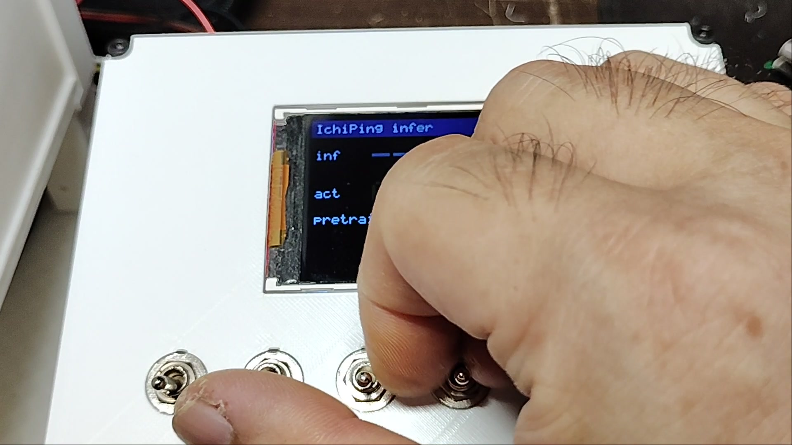
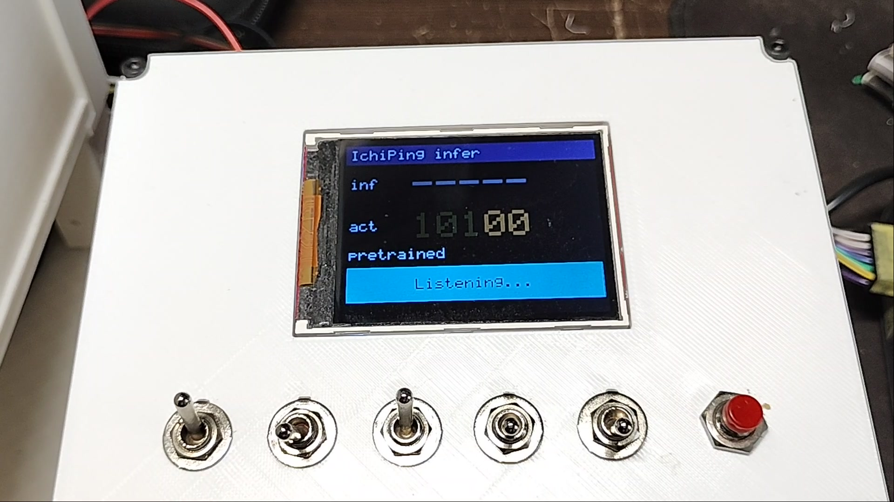
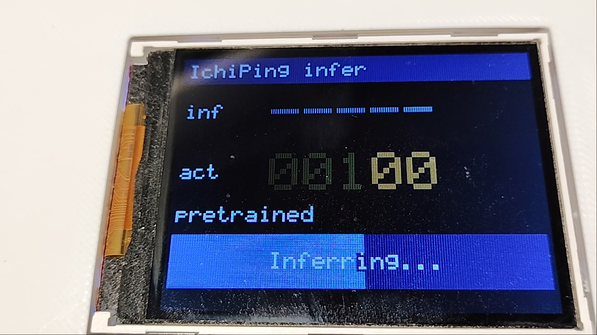
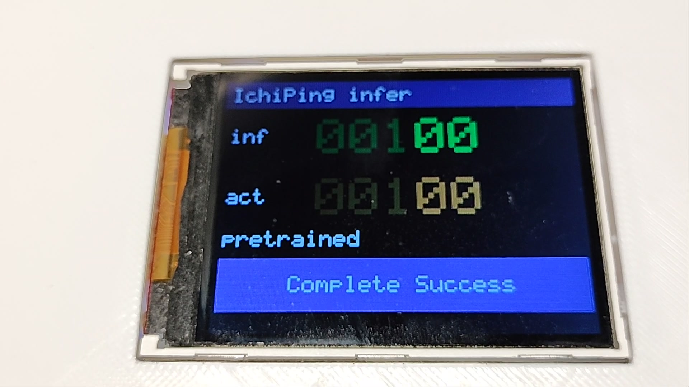

操作の流れ:スイッチを倒して、ボタンを押すだけ
トグルの状態が「正解」、画面の inf が Solist-AI の「推論」。両者を並べて表示するので、当たったかどうかがその場で分かる

① トグルで窓・扉を指定
5 個のトグル=窓 a/b/c と扉 AB/BC。サーボが模型の窓・扉を実際に開閉する

② EXEC で Ping を鳴らす
"Listening..." の間、スピーカが PRBS を 2 秒鳴らし、マイクが反響を録音

③ Solist-AI が推論
"Inferring..." のゲージが進む間に、録音を受け取り FFT → CNN 前段 → ELM を実行

④ 結果を表示
inf(推論)と act(正解)が一致すると Complete Success
画面の読み方
:5 桁は左から
c・BC・b・AB・a
(模型の部屋の並びと同じ。1=開)。閉じた扉の向こうで「本来は聞こえない」桁は暗く表示。
判定:
Complete Success
32 状態すべて一致 /
Conditional Success
聞こえる範囲(14 クラス)は一致 /
Failure
不一致。EXEC を 2 秒長押しすると現地校正モードに入る